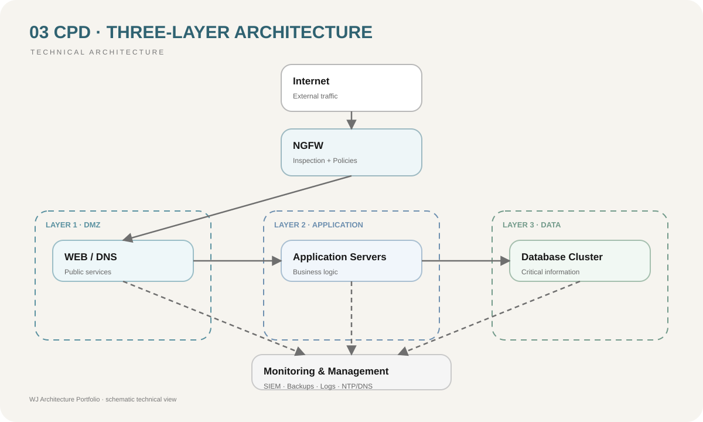

Exposición directa
La separación por capas evita publicar directamente servicios internos críticos.
03 / Data Center
Diseño de un Centro de Procesamiento de Datos organizado en tres capas funcionales.
07 / Risk Reduction
La separación por capas evita publicar directamente servicios internos críticos.
La segmentación limita comunicaciones innecesarias entre web, aplicaciones y bases de datos.
La distribución lógica de funciones facilita continuidad y administración.
La capa de datos permanece aislada de accesos externos directos.
01 / Context
Una infraestructura de servidores sin separación funcional incrementa la superficie de ataque y dificulta aplicar controles específicos a servicios públicos, aplicaciones internas y bases de datos.
02 / Objective
Diseñar un CPD organizado por capas para separar servicios expuestos, procesamiento de aplicaciones y almacenamiento de información, facilitando la segmentación, administración y aplicación de controles de seguridad.
03 / Architecture
El diseño distribuye la infraestructura en tres zonas. La primera capa corresponde a la DMZ y aloja 15 servidores web más 2 servidores DNS. La segunda capa contiene 10 servidores de aplicaciones. La capa final mantiene 6 servidores de bases de datos, aislados de accesos directos desde Internet.
04 / Diagram

05 / Decisions
Los servicios que deben interactuar con Internet permanecen separados de las aplicaciones y datos internos.
La lógica de negocio se concentra en una zona intermedia con comunicaciones estrictamente controladas.
Las bases de datos únicamente reciben conexiones autorizadas desde servicios que realmente las necesitan.
El tráfico entre niveles debe atravesar controles de firewall y políticas explícitas.
06 / Stack
08 / Result
La separación en capas permite aplicar políticas específicas según el nivel de exposición de cada servicio y reduce el riesgo de que una vulnerabilidad en un servidor público proporcione acceso directo a los sistemas de bases de datos.
08 / Lessons
La arquitectura de un data center debe diseñarse considerando flujos de comunicación antes que dispositivos individuales. Cada conexión entre capas debe existir por una necesidad funcional concreta y estar sujeta a controles verificables.